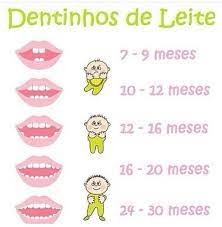
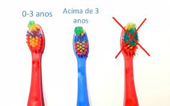
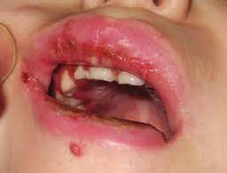

Geralmente, o período de erupção dentária é um momento de grande importancia e mudanças que afetam diretamente a saúde da criança. Os dentes decíduos, mais conhecidos como dentes de leite, começam a irromper por volta dos quatro e dez meses de idade, finalizando a erupção em torno dos 30 meses de idade. Muitas vezes essa erupção vem acompanhada de sintomas que desagradam tantos aos bebês como aos pais, são os mais comuns: febre, dor e irritabilidade. É de fundamental importância que os bebês sejam acompanhados por um odontopediatra, sendo indicado a marcação de consulta desde o primeiro dentinho ou quando houver sinal de erupção ou outra necessidade. É importante também que a família conheça a cronologia dentária para saber o que está acontecendo. Na figura abaixo tem uma breve e lúdica explicação dessa cronologia dos dentes decíduos (dentes de leite).
A higiene bucal do bebê deve ser iniciada antes mesmo da erupção do primeiro dente. Com o auxílio de uma gaze limpa umedecida em água deve ser realizada uma massagem na gengiva para limpeza da cavidade bucal e com o objetivo também que o bebê se acostume com a sensação de "boca limpa" e aceite com mais facilidade a fase de escovação quando essa for iniciada. Quando o primeiro dente estiver erupcionado, a escova com pasta de dente COM FLÚOR (Atentar ao rótulo da pasta de dente, deve ter de 1000 a 1100 ppm de flúor), a escova dente sempre terá que ter cabeça pequena e cerdas maciais ou extra macias, é necessário atentar também para quantidade de pasta utilizada, a figura abaixo ilustra bem essa etapa.
Diferente do que muitos pensam, a cárie não é o único problema bucal que pode surgir em bebês e crianças (ou em indivíduos de qualquer idade). Existe uma lista extensa de doenças que podem acometer a boca das crianças, algumas das mais conhecidas são a monilíase (popularmente chamada de sapinho), gengivoestomatite (causada pelo vírus da herpes, gerando aftas, bastante desconforto, febre, etc), a doença mão-pé-boca, entre outras.
É necessário que a criança seja acompanhada desde bem cedo por um odontopediatra para que juntamente com os pais seja feita a correta prevenção e se necessária interveção de algum problema ou agravo bucal que possa surgir.
